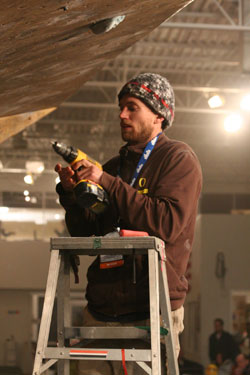

|
e-Grips Routesetting Interview: Jamie Emerson 
How long have you been setting and climbing? "I started setting in 2002 when I began working for The Spot Bouldering Gym in Boulder, CO and I started climbing in Michigan in 1999." How did you learn? "Starting in Boulder was a huge advantage, because the standard is very high here. I really learned about competition setting under Scott Mechler when he came through with the PCA. He has had a big influence on my style. Of course I put my time in like anyone else, as I was setting 4 days a week at one of the busiest gyms in the country." What do you most enjoy about setting? "I have always been interested in the hardest moves and the strongest climbers. Setting for big events for the strongest men and women in the country is really amazing. It’s hard not to be motivated knowing that the likes of Chris Sharma and Daniel Woods will be climbing on your problems." What makes a "good" routesetter? "Lack of ego. As long as you are willing to tweak your route for the betterment of the comp and drop any personal attachment you might have to a certain hold or move, I think you can go a long way with setting. It helps that I know the field very well, because I climb with most of them on a regular basis." What do you think makes YOU a "good" routesetter? What would your friends say? "I am willing to work with the group and am open to changing my routes at any point. I also think I have a creative and unique style. I am one of the only people in the country strong enough to set and forerun for people like Paul Robinson and Daniel Woods. That certainly helps my cause." Where have you, or do you, set? "I have set for several PCA’s, Sendfest I and II, ABS Nationals for the past 4 years, TEVA Mountain Games, Adventures NYC and too many regionals and locals to count. I currently am just working as a national level setter." What are favorite events you’ve been a part of? "The big events are always fun. The Sendfest events are really cool, its summer, the strongest climbers are out for the trade show and people seem psyched to throw down. I also like to do the local events because you can set a really crazy style and the climbers have time to work stuff out." Do you have any favorite moves or problems that you’ve set? "I love to put the starting box on the floor and make them jump to a hold on the wall. I also love one arm pulls. Very powerful and very dramatic." What is your favorite e-Grips set? "Of course, anyone that has set with me knows I can’t live without the Joe’s Slopes II. One handed sloping holds are so good for comp setting." Favorite Unique Feature? "The Hueco Wonder Hole. Not the obvious answer, but there are so many possibilities. I love setting a hard problem with a jug on it." Finally, how would you describe what makes e-Grips handholds the best? "The shapers have climbed around the world and are some of the most amazing artists I know. They bring the subtlety of outdoors to their holds and this translates to amazing movement. They are unbreakable and the look awesome on wall. E-grips is the first shape I always reach for, because I only have to reach once." |